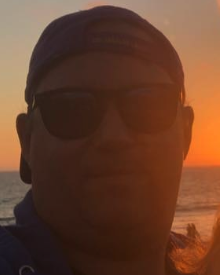

About Me

My name is Donald Hughes. I am an account manager for Yardi Systems. I work
with C-Level Executives and help them with analytics, training, policy managmeent,
and
support. I
have a passion for technology and business strategy. As a pasttime, I am a hobbyist crypto
currency
miner. I have taken to learning software engineering at UC Irvine to
enable
my
ability to leverage blockchains in a way that could hopefully revolutionize the world. I am
very
active on social media and enjoy keeping involved with my favorite contributors and
community.
I play a number of musical instruments and am well versed in music
theory. I live near the ocean
and am learning to surf.